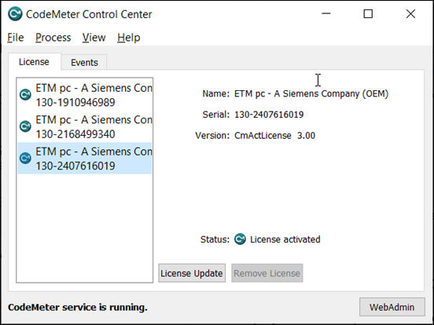
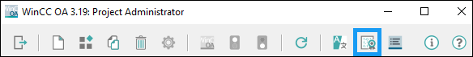
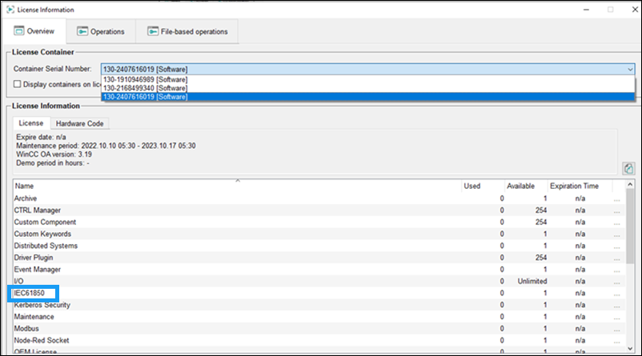
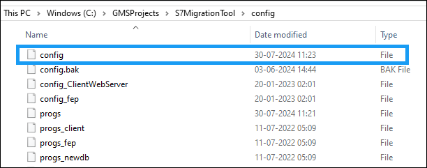

IEC61850 driver manger fails to start
Problem:
IEC61850 driver manger fails to start. Upon starting the driver, it's state changes to starting, and remains in this state without getting into the running state.
Cause:
The IEC61850 driver needs a separate license that can be added anytime to the License Management Utility (LMU), however it's entry is updated in the project only during project creation and upgrade. If the license is added to the LMU after project creation, then it is not added in the project's config file. Therefore, the driver fails to start.
Solution:
Edit each running project's config file and add the entry of the key in the [general] section.
[general]
useCMContainerSerialNumber = "130-2407616019"
Thereafter, restart the project from SMC.
Following are the steps in detail:
- Open CodeMeter Control Center from the Windows start bar and ensure that it contains the following licenses.

- If the (ETM pc - A Siemens Company (OEM) 130-2407616019) license is not present, do the following:
- Start the project in SMC.
- Open WinCC OA Project Administration from windows start bar menu.
- Open License Information by clicking the certificate icon.

- Find out which container number has the entry for IEC61850. This entry is the key. The key in the following image is 130-2407616019

- Open Project config in notepad. This file is present at either of the following locations, \GMSProjects\<ProjectName>\config\config or <ProjectPath>\config\config. For example, in the following image, the config file is located at C:\GMSProjects\S7MigrationTool\Config.

- Add the entry of the key in the [general] section.
[general]
useCMContainerSerialNumber = "130-2407616019" - Restart the project from SMC.